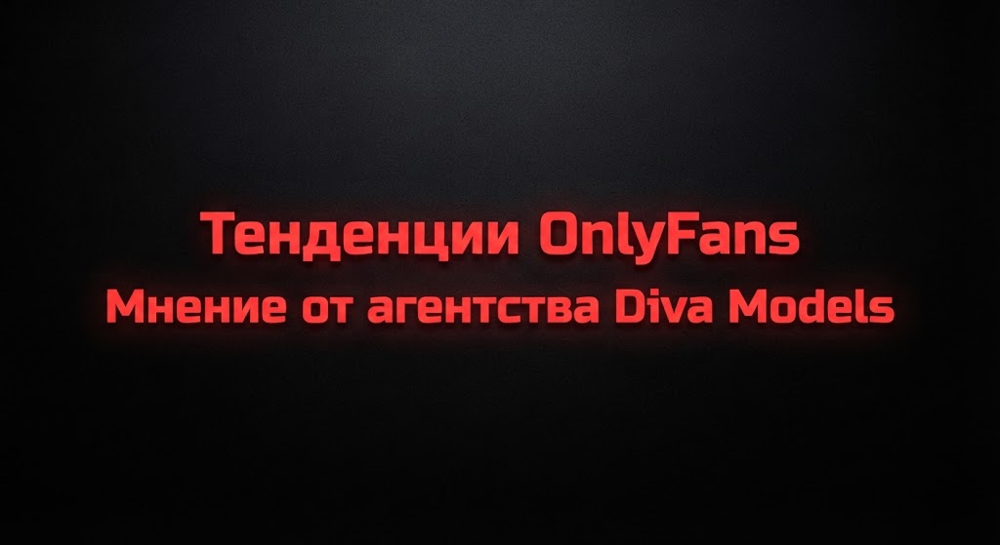

Создание действительно успешного образа на платформе — это гораздо больше, чем просто размещение фотографий или видео. В 2026 году качественная онлифанс работа требует комплексного подхода, где сочетаются креативность, стратегия и понимание аудитории. Если вас интересует, как заработать на онлифансе и построить сильный личный бренд, профессиональное агентство онлифанс и опытная модель onlyfans подскажут правильный ориентир.
Если вы стремитесь стать узнаваемой личностью в этой сфере, то эффективная стратегия сосредоточенности на своем визуальном и тематическом стиле станет вашим лучшим союзником. Каждая успешная модель онлифанс понимает, что современная онлифанс работа строится на уникальности. Когда за дело берется надежное агентство онлифанс, модель onlyfans получает полную поддержку, а вопрос о том, как заработать на онлифансе, решается системно и безопасно.
Стратегии для создания бренд-модели OnlyFans
Первым шагом к достижению успеха является тщательное определение того, что делает вас особенными. Чтобы создать собственную бренд-модель OnlyFans, нужно остановиться и подумать: чем вы отличаетесь от других? Когда автору помогает опытная модель onlyfans и профильное агентство онлифанс, онлифанс работа приносит результат гораздо быстрее. Понимая, как заработать на онлифансе, каждая модель онлифанс формирует четкое позиционирование.
Изучая рынок, полезно проанализировать, какие темы сейчас пользуются популярностью, а также где можно заполнить пробелы, создавая свою нишу. С помощью аналитики и общения вы сможете лучше понять потребности фанатов. Профессиональное агентство онлифанс и успешная модель onlyfans знают, как заработать на онлифансе в любой нише, а качественная онлифанс работа и уверенная модель онлифанс обеспечивают долгосрочный рост.
Не забывайте о важности узнаваемости — использование правильных ключей и стратегий поможет создать глубокий контекст. Как показывает практика, успешная модель onlyfans и надежное агентство онлифанс превращают обычный профиль в топ-аккаунт, где онлифанс работа становится прибыльной профессией, а вопрос о том, как заработать на онлифансе, перестает быть загадкой для новичка.

Тенденции OnlyFans 2026 – вступление в будущее цифрового творчества
Экспертный разбор главных трендов платформы, монетизации и аналитики.
Читать статью →Разработка Визуального Стиля и Имиджа
Каждая успешная бренд модель OnlyFans имеет выразительный визуальный стиль, который придает ощущение целостности. Когда онлифанс работа ведется под руководством экспертов, опытная модель onlyfans и профильное агентство онлифанс настраивают визуальный ряд идеально под запросы платежеспособной аудитории США и Европы.
Основные составляющие визуального стиля включают палитру цветов, уникальный дизайн шрифтов и логотип. Понимая, как заработать на онлифансе, талантливая модель онлифанс создает узнаваемый образ, который укрепляет личный бренд.
Создание Качественного и Разнообразного Контента
Если вы стремитесь, чтобы ваш бренд модели OnlyFans действительно работал на вас, необходимо уделять большое внимание качеству материалов. Профессиональная онлифанс работа невозможна без регулярных съемок. Продвинутая модель onlyfans и ведущее агентство онлифанс знают все секреты о том, как заработать на онлифансе благодаря эксклюзивному контенту.
Активное Взаимодействие с Аудиторией
Каждая бренд-модель OnlyFans формируется не только за счет контента, но и благодаря активному общению с подписчиками. Когда онлифанс работа в чатах 24/7 делегируется команде, модель onlyfans и модель онлифанс освобождают время для творчества. Профессиональное агентство онлифанс обеспечивает продажи, а авторы узнают на практике, как заработать на онлифансе миллионы.
Эффективное Продвижение и Сотрудничество
Чтобы охватить еще более широкий сегмент пользователей, стоит обратить внимание на активное продвижение. Сильное агентство онлифанс берет на себя закупку трафика, а модель onlyfans и модель онлифанс фокусируются на съемках. Благодаря этому онлифанс работа приносит максимальный доход, а вопрос о том, как заработать на онлифансе, решается за счет четкой маркетинговой стратегии.
Анализ и Адаптация Стратегии
Непрерывное совершенствование является ключом к успеху. Профессиональное агентство онлифанс проводит глубокую аналитику показателей, помогая понять, как заработать на онлифансе еще больше. Когда онлифанс работа контролируется цифрами, модель onlyfans и модель онлифанс уверенно обходят конкурентов.
Итоговые Рекомендации
Создание успешного образа на платформе требует постоянного сочетания творчества и планирования. Путь к построению успешной бренд модели OnlyFans — это путешествие, где модель onlyfans, модель онлифанс, надежное агентство онлифанс и грамотная онлифанс работа ведут к вершине успеха, показывая на практике, как заработать на онлифансе в 2026 году.